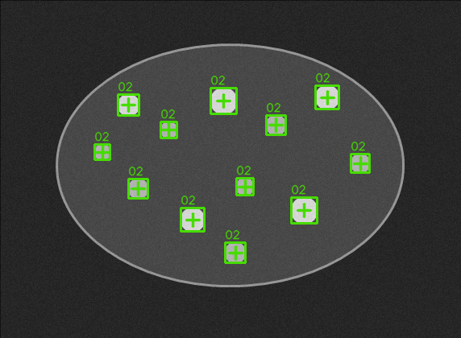

먼저 알아둘 말
| 화면 용어 | 뜻 |
|---|---|
| Image | 검사할 사진 |
| Layer | 원본이나 중간 결과 이미지 |
| Tool | Threshold, Blob처럼 한 가지 작업을 하는 기능 |
| Preview | 현재 설정을 한 번 시험하는 실행 |
| Pipeline | Tool을 실행 순서대로 연결한 목록 |
| Recipe | 저장된 Pipeline과 설정 |
| Metric | 개수, 면적, 점수처럼 판정에 쓰는 숫자 |
| ROI | 검사할 이미지 영역 |
샘플 선택, Layer 선택, preset 적용, 파라미터 변경만으로는 실행되지 않습니다. 미리보기 실행이나 Run Review를 직접 눌러야 결과가 바뀝니다.
1. 공개 Blob 샘플 열기
- 시작 화면에서 샘플 열기를 누릅니다.
- Learn 경로에서 Blob을 선택합니다.
- 밝은 원형 입자가 있는 Good 샘플을 선택합니다. 검색할 때는
Public_Blob_Particles_Good를 입력해도 됩니다. - 기준이
ResultCount 8~14인지 확인합니다. - 이 샘플 열기를 누릅니다.
가운데에 입자 이미지가 보이고 현재 Layer가
Main이면 정상입니다. 샘플을 열어도 검사는 아직 실행되지 않습니다.2. Blob 결과 만들기
- 왼쪽 Tool 목록에서 Blob을 엽니다.
- 입력 Layer가
Main, 결과 Layer가Blob_Preview인지 확인합니다. - 기본 preset을 누릅니다.
- PropertyGrid에서 기준값을
150으로 입력합니다. - 기준값 행을 선택하면 Parameter Guide에서 값의 뜻과 확인할 결과를 볼 수 있습니다.
- 미리보기 실행을 누릅니다.
정상 결과: 미리보기 OK / 검출 12 / 밝은 입자 12개에 노란 상자와 중심 표시 / 결과 Layer
Blob_Preview
| 증상 | 확인할 값 |
|---|---|
| 결과가 바뀌지 않음 | 미리보기 실행을 눌렀는지 확인 |
| 입자가 너무 많거나 적음 | 기준값, 최소 면적, 최대 면적 |
| 엉뚱한 위치가 잡힘 | ROI와 입력 Layer |
후보 표에 제외된 행이 많이 보여도 실제 입자 수는 허용됨과 ResultCount로 판단합니다.
3. Good과 Bad 비교하기
- 아래 샘플 안내에서 Pipeline 보기를 누릅니다.
- Pipeline Review에서 Run Review를 누릅니다.
- Good 결과의
ResultCount가8~14안인지 확인합니다. - NG 기준 열기 또는 짝 샘플 열기 기능으로
Public_Blob_Particles_Sparse_Bad를 엽니다. - 다시 Run Review를 누릅니다.
Bad 샘플은 입자가 3개이므로 정상 범위
8~14보다 적어 결과 NG가 됩니다.검증 OK는 Pipeline 정의가 실행 가능한 상태라는 뜻입니다. 결과 OK/NG는 이미지 검사 결과입니다.
4. 내 Recipe 만들기
01 Threshold : Main -> Threshold_Preview 02 Blob_1 : Threshold_Preview -> Blob_Preview
Threshold 저장
- 상단 Recipe 선택 영역에서 새 Recipe를 만듭니다.
- 공개 Blob Good 이미지를 다시 엽니다.
- Threshold Tool을 엽니다.
- 입력 Layer를
Main, 결과 Layer를Threshold_Preview로 둡니다. - 미리보기 실행으로 흰 입자와 검은 배경이 분리되는지 확인합니다.
- 파이프라인에 추가·저장을 누릅니다.
Blob 저장
- Blob Tool을 엽니다.
- 입력 Layer를
Threshold_Preview로 선택합니다. - 결과 Layer는
Blob_Preview로 둡니다. - 미리보기 실행으로 입자 상자와 개수를 확인합니다.
- 파이프라인에 추가·저장을 누릅니다.
저장 결과 확인
- Pipeline 보기를 엽니다.
- 두 Step의 입력과 출력이 위 경로와 같은지 확인합니다.
- Run Review를 누릅니다.
- 앱을 다시 열었을 때 두 Step이 남아 있는지 확인합니다.
다시 열었을 때 Step 상태가 WAIT인 것은 정상입니다. Recipe 복원만으로 실행되지 않으며 Run Review를 눌러야 결과가 생깁니다.
5. 화면이 예상과 다를 때
- 현재 이미지가 맞는지 확인합니다.
- Tool의 입력 Layer를 확인합니다.
- 이전 Step의 결과 Layer가 있는지 확인합니다.
- Preview 또는 Run Review를 실제로 눌렀는지 확인합니다.
- 결과 이미지의 상자와 중심이 대상 위에 있는지 확인합니다.
- Metric이 목표 범위 안인지 확인합니다.